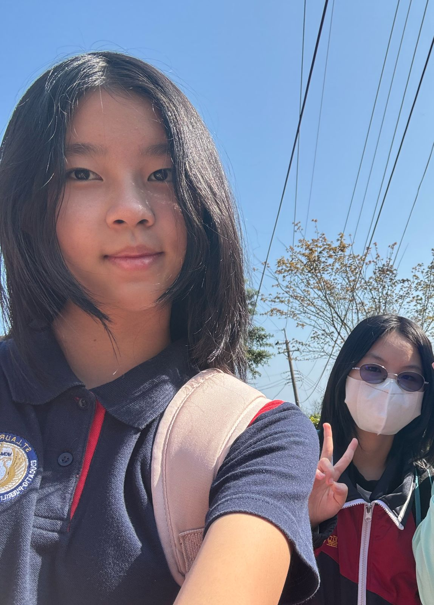
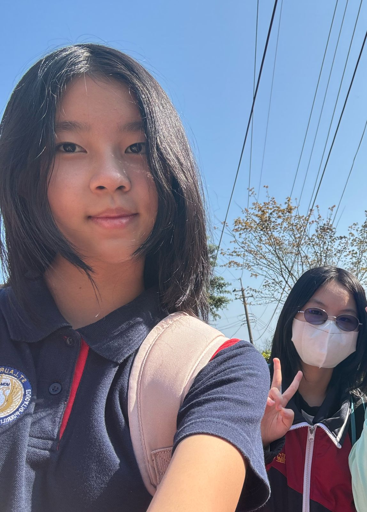

Dalam pelajaran Mandarin saya, saya mendapat tugas untuk menceritakan pengalaman saya di Jiufen Old Street.
Dalam pelajaran Mandarin saya, saya mendapat tugas untuk menceritakan pengalaman saya di Jiufen Old Street.
我的朋友Lisa很漂亮，她有小小的眼睛，高高的鼻子。她还有黑色的短发，直直的。她的嘴巴小小的，嘴唇大大的。她个子矮矮的，身材瘦瘦的。
我们一起去了九份老街，那里有很多商店和好吃的食物。我们买了小吃，看到了美丽的风景，也拍了很多照片。这次旅行让我认识了一个特别的朋友，我很开心！